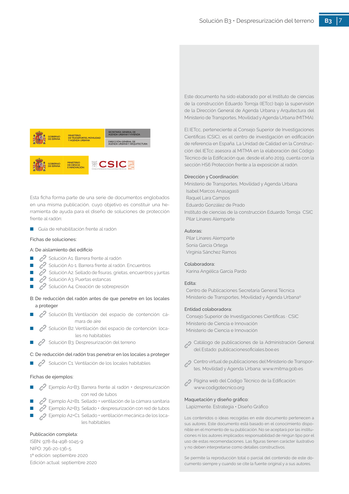

GUIA · OBSERVACIONES Necesidad de un técnico especialista · versión sin-fecha · capa guia
Formatos: JSON compacto · Markdown · PDF fuente
Ámbito del documento · texto del ámbito · documento y tablas
Tipo: tablas, figuras · nivel 3 · sección estimada: 3 hueco de comunicación · padre: a0022
OBSERVACIONES Necesidad de un técnico especialista Necesidad de un técnico especialista Debido a la complejidad de esta solución, es fundamental contar con un técnico especialista para que realice un diagnóstico de la situación existente y un diseño adecuado de la solución. Como ya se ha destacado, la despresurización será efectiva solo si alcanza toda la planta o muro a proteger. Para ello será necesario un diseño y dimensionado adecuado del sistema de acuer do con el sustrato existente. La situación óptima sería que el sustrato fuera permeable al aire y ho mogéneo en toda la superficie. Sin embargo, en la mayoría de los casos los sustratos son poco permeables y presentan obstáculos al flujo de los gases como rocas, muretes de cimentación o zapatas. 7 Solución B3 • Despresurización del terreno B3 7 Este documento ha sido elaborado por el Instituto de ciencias de la construcción Eduardo Torroja (IETcc) bajo la supervisión de la Dirección General de Agenda Urbana y Arquitectura del Ministerio de Transportes, Movilidad y Agenda Urbana (MITMA). El IETcc, perteneciente al Consejo Superior de Investigaciones Científicas (CSIC), es el centro de investigación en edificación de referencia en España. La Unidad de Calidad en la Construc ción del IETcc asesora al MITMA en la elaboración del Código Técnico de la Edificación que, desde el año 2019, cuenta con la

PDF fuente redistribuible: copia fiel enlazada en esta página (SHA256 verificado).